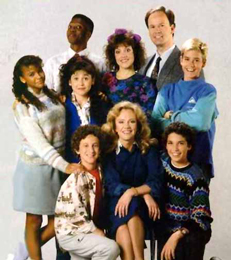
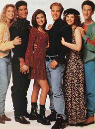

Everything You Wanted to Know About Saved By The Bell But Were Too Afraid To Ask
Saved by the Bell, the original series, debuted on NBC on August 20, 1989 in primetime. Saved by the Bell aired twice in primetime (once on August 20, and once later) before settling into its Saturday morning timeslot starting on September 9, 1989. Saved by the Bell played out most of its existence within the reworked plot definitions mentioned above in NBC’s Saturday morning line-up. For Grades 9 through 12 (1989–93), the show followed the adventures of Zack, Screech, Kelly, Slater, Jessie and Lisa in Bayside High, and in some other settings such as at the Mailbu Sands Beach Club, in Palm Springs and in Hawaii. For specifics on the episodes of Good Morning, Miss Bliss or Saved by the Bell, see the Episode Guides on this site.
 Also during the Grade 12 season of Saved by the Bell, the Saved by the Bell-Hawaiian Style TV movie was aired on November 27, 1992 in primetime on NBC. It was rerun again in primetime on August 31, 1993 on NBC in the run up to the primetime premiere of Saved By The Bell: The College Years. See Episode Guide for more on the Saved By The Bell: Hawaiian Style.
But something happened when Grade 12 rolled around. By this time, the show was very popular. But something needed to be done now that the show had reached the end of high school. The graduation episode had been filmed, and even a Saved By The Bell TV movie set in Hawaii had been filmed after that (though chronologically, it actually appears to be set in time after the Grade 11 season and before the Grade 12 season, and obviously it aired during the regular Grade 12 season). But the question was, what to do with the show now?
Another problem came when Tiffani-Amber Thiessen (Kelly Kapowski) and Elizabeth Berkley (Jessica Spano) decided that they wanted to move on and leave the show half-way through the Grade 12 season. This led to the introduction of a new character named Tori Scott. See the “Tori Era”.
Saved by the Bell (and its spinoffs) were sitcoms produced by NBC Productions, Inc. Saved by the Bell first began its run on the Disney Cable Channel as Good Morning Miss Bliss. After 13 episodes on Disney, the show changed its name to Saved by the Bell and moved to NBC as part of NBC’s Saturday morning T-NBC line up in the fall of 1989. “The Original Series” ended its last first-run season in 1993, and it is now syndicated on local stations and the cable stations TBS and WGN.
 Saved by the Bell spun-off two shows. Saved By The Bell: The College Years (See SBTB: The College Years) and Saved By The Bell: The New Class (See SBTB:The New Class)
Saved by the Bell: The College Years, the primetime sequel to Saved by the Bell, which followed the continuing adventures of Zack Morris, Samuel “Screech” Powers, A.C. Slater, and Kelly Kapowski in college at California University. The College Years originally aired on NBC on Tuesday nights in the 1993-94 season, but was cancelled after one season and is now in syndication.
Saved by the Bell: The New Class, the Saturday morning spin-off of Saved by the Bell, also began its run in the fall of 1993. When “The New Class” was renewed for the 1995-96 season, with major cast changes (the third in 3 seasons!). Saved By The Bell: The New Class completed its seventh (and last) season in the 1999-2000 season.
NOTE: There were rumors that Engel and co. were working on a couple of different “new” versions of Saved by the Bell for the season after The New Class left the air (which would have been the ’00–’01 TV season). But it looks like they never got of the ground. So, for now, an original, new incarnation of Saved by the Bell doesn’t look to hit the airwaves any time soon. Stay tuned…
Saved by the Bell was a Peter Engel Production, and was Produced by either Marica Govons or Franco Bario. Its Exectuive in Charge of Production was William Phillips (for the first 3 seasons), or Gary Considine (from the Grade 11 season of Saved By The Bell throughout the end of the series). It was created by Sam Bobrick.